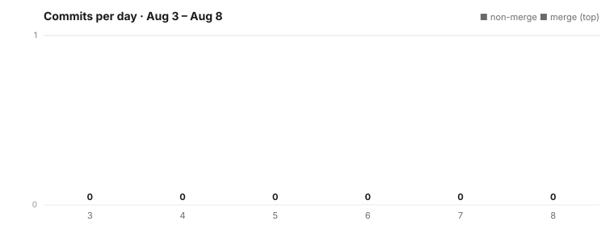

One hundred and seven files in the bridges that connect outside chat apps. Eighty-three in the pipeline that reviews every change before it ships. Sixty-six in how recall walks between related memories. Fifty-one in the panel that keeps a record of who let an AI into a conversation. Four numbers, one week, and twenty more areas besides.
None of the four is the whole story on its own. Connecting an outside messaging account stopped requiring a copied key. A shared conversation's record of how an AI got admitted now survives after the AI is removed. A proposed change that conflicts with another no longer gets bounced back to a person to redo by hand. And recall learned to follow a chain of related memories instead of only ranking them by keyword. This dispatch covers all four, then walks every area that changed this week, including the ones that didn't.
The work below spans 1,361 files across the source tree, the client apps, the build scripts and the Rust core, in 2,052 commits, 452 of them merges.
flowchart TB scan["A code is scanned
instead of a key copied"] --> live["Slack or Discord
account connects"] invite["A member proposes an AI
for the conversation"] --> audit["Proposed, joined, objected to, removed —
each written down as it happens"] conflict["Two proposed changes
disagree"] --> merge["Resolved inside the pipeline,
not bounced back to a person"] ask["Recall is asked a question"] --> chain["Follows the graph of
related memories, opt-in"] classDef good stroke-width:2px; class live,audit,merge,chain good;
Four things changed this week
Four things changed this week, one per major area of the codebase, and none of them touches the same code as the others. Each is written up in full further down; these are the shapes.
Connecting another account got a real login
Slack now connects without asking anyone to find, copy, or paste a session key — the card presenting that connection was also narrowed to the one purpose it serves, replacing a more general approval surface that used to stand in for it. Discord's in-app "Connect" now goes through the same scan-a-code path used elsewhere, which keeps working even where the direct route to Discord's own servers is blocked. Underneath both: a direct 1:1 conversation with someone on a bridged account now lands in the ordinary Friends list instead of being filed as a group, derived from the bridge's own membership data rather than assumed; outgoing bridged messages carry delivery receipts the way a native chat does; a location or a contact card can be shared through a bridge the same structured way it can be shared natively; and starting a brand-new group conversation through a bridged account is now a real action inside the app instead of something you had to go create in the other app first.
The build pipeline stopped treating a disagreement as a rejection
When two proposed changes conflict, an automated reviewer now resolves the conflict itself, inside the pipeline, before evaluating the result — rather than bouncing the whole change back to a person to redo by hand. A change that gets updated after it already passed review is re-checked from the top instead of riding on the old verdict. A change that fails and is retried re-joins the review queue at the back, not the front. And two separate classes of infrastructure fault — a review step that silently ran unauthenticated, and a stamped identity that came back empty — no longer get mistaken for a bad change and used to reject it.
Recall learned to follow a chain, not just rank a list
The part of the assistant's memory search that can walk from one memory to a related one — rather than only scoring memories by keyword or similarity — is now wired into the path members actually use, rather than living only in test scaffolding. It ships off by default; turning it on is a separate, explicit choice. Search on a memory category with no configured limit now falls back to a sensible default instead of failing to answer, and the same recall-grounding path now runs on the mobile client, not desktop alone.
Letting an AI into a conversation became an explicit, readable grant
The single dropdown that used to govern it is replaced by two independent axes — Voice, for when the agent may speak, and Reach, for what it may see — above a panel that spells out in plain sentences what the room is being asked to approve, including the things it is not handing over. The request itself now draws a purpose-built card carrying the agent's name, its role, and who proposed it, in place of a generic approval banner. And the history behind it became readable: four moments — an AI proposed, an AI joined, someone objected, someone removed it — shown in time order in the conversation's settings, a record that keeps working once the agent it describes is gone.
What this means, in plain terms
Most of what lands in a week is particular to the thing it lands in. A few things are not. These are the five general lessons this week's work actually paid for — each one learned by getting it wrong somewhere first.
A list of who is here cannot tell you how they got here
Membership is a fact about now. Arrival is a fact about the past, and the two need different storage. When the only record is the membership list, removing someone deletes the history of their arrival as a side effect — not because anyone decided it should be forgotten, but because it was never stored anywhere that survives the removal. The general form: any time you are tempted to store history as a property of a living thing, ask what happens to that history when the thing dies. If the answer is "it goes too," it is in the wrong place. (We wrote about that split earlier, in write to the log, read from the projection.)
One control per decision
A single dropdown offering seven named presets is not simpler than two dropdowns offering three options each — it is smaller, which is a different property. The seven names have to be invented, they have to be learned, they cover twenty-one possible combinations badly, and each one conceals which decisions it is making on your behalf. Splitting one control into two costs a line of screen and buys back the combinations nobody thought to pre-bake, plus the ability to read your own configuration without a glossary. The trade only goes this way when the two decisions are genuinely independent; when they are not, splitting them invites nonsense states, and the right move is the opposite one.
Name what is not being granted
People are poor at inferring an absence. A permission screen listing only what is handed over leaves the boundary to be worked out by elimination — against a set the reader cannot see the edges of. Listing the withheld capabilities alongside the granted one converts a vague "some access" into a specific claim the reader can check and, more importantly, can restate afterwards. An approval nobody can restate is not consent; it is a click.
An exact list beats a clever pattern wherever over-removal is the harm
The obvious way to filter a family of labels is a pattern that catches anything containing the word — which also catches "bald eagle" and "cosmetic dentistry." A plain list of whole labels, compared after collapsing spacing and case, removes what is on it and nothing else. It costs more to maintain than a pattern, and the maintenance cost is real and permanent. It is worth paying in exactly one situation: when a false match is worse than a missed one. Most filtering is not that situation. This one is, because the failure is invisible — nobody notices the thing that was quietly removed.
The point of a queue is that failing does not let you cut the line
A change that fails review and gets retried re-enters the review queue where it currently stands, not where it stood before it failed. That is the rule any fair queue for people applies, and it is easy to get backwards without anyone noticing for a long time, because the word "retry" sounds like it should restore your former position. The related lesson is sharper: a broken reviewer and a bad change look identical from the outside. Two infrastructure faults this week were rejecting every candidate that reached them, regardless of content — which reads on a dashboard as a sudden collapse in quality. Any system that judges things needs to be able to say "I could not judge this" as a distinct answer from "I judged this and it failed." Without that third state, an outage is indistinguishable from a verdict, and the verdict is the one people act on.
2,052 commits landed this week, touching every one of the 23 named areas below except the three called out as quiet, and one — the graph browser — that gained and then lost the same change inside the seven days.
Signing in without a key
Think of two phone carriers that have never agreed on a shared standard. To call from one to the other, you used to need the receiving carrier's own account credentials — copied out of its own settings screen, and typed into the calling app by hand. The call was technically possible for everyone and practically available only to people willing to go and find that key.
That was the shape of connecting Slack or Discord to a conversation here. This week both connections became a scan.
flowchart LR A["Open Connect on the\nadapter card"] --> B["A code appears"] B --> C["Confirm it in\nthe other app"] C --> D["The session comes\nback on its own"] D --> E["Account is linked —\nnothing was typed or pasted"]
A key you have to go find is a filter, not a step. This is the part worth generalising. A setup instruction that reads "paste your API token here" does not slow everyone down by an equal amount — it stops one group of people completely and inconveniences another slightly. The people it stops are exactly the ones who would have been new to the product. Measuring the cost of that step by how long it takes someone who already knows where the token lives is measuring the wrong population, and it is the easiest measurement to take, which is why the step survives for years in products that are otherwise carefully made.
What was built. Slack's connection card now presents a login with nothing to locate, copy, or paste: you confirm the connection in the place where you are already signed in, and the session comes back on its own. That card was also narrowed to the single purpose it serves, replacing a more general approval surface that had been standing in for it — a generic surface doing a specific job is a reliable source of confusing copy, because it has to describe every job it might be doing.
Discord's in-app "Connect" used to route straight to Discord's own servers, which fails outright anywhere that route is blocked. It now goes through the same scan-a-code path already used for the other connections. The reason is worth stating: the browser, not the app, is the component that talks to Discord. Putting the conversation where the network access actually is removes a class of failure that no amount of retry logic inside the app could have fixed.
Where a message actually lands
A direct, one-to-one conversation with someone reached through a bridged account used to be filed the same way a group conversation is — a small thing that produces a persistently wrong mental model, because the place a conversation appears is most of what people use to decide what it is. It is derived now from the bridge's own membership data: is this conversation actually between two people, or more? A genuine 1:1 lands in the ordinary Friends list, the same place a 1:1 with anyone else lands. Note what supplies the answer — the other system's own record of who is in the room, rather than a guess made on this side from the shape of the traffic. Asking the authority is slower and less clever than inferring, and it is right more often.
What a sent message proves
Messages sent out through a bridge now carry the same delivery receipts a native conversation shows — sent, delivered, read — instead of leaving the sender to wonder whether anything arrived on the other side. A bridge that silently succeeds and a bridge that silently fails look the same from the sending end, and the ambiguity is worse than either outcome: people respond to it by sending the message again somewhere else, which is the behaviour a messaging product least wants to teach.
A location or a contact card can now be shared through a bridge in the same structured way it can be shared natively, rather than only as a line of text describing it. And where a platform genuinely cannot carry one of those — a location share through Signal, specifically — the app now refuses the send and says so.
That refusal is the deliberate part. There were three available behaviours: drop it silently, degrade it to text and let the recipient work out what happened, or refuse and explain. The middle one is the tempting one, because it always "works." It is also the one that makes the sender believe something was delivered that was not. Refusing costs the sender a moment and tells them the truth; the degradation can always be chosen by the person, knowingly, after being told.
Creating a group
Starting a brand-new group conversation through a bridged account is now a real action inside the app — a dialog that asks who belongs, and produces an actual room on the other side — rather than something you had to go and create in the other app first, and then discover here. A bridge that can only ever observe rooms created elsewhere is not really a way of using the other platform; it is a viewer for it.
What it cost to prove
Each of the platform-specific paths above — Slack, Discord, WhatsApp — got a matched pair of tests this week: one proving the send or receive succeeds, and one proving the specific failure mode is handled rather than silently swallowed. That pairing is why the Signal location-refusal is a designed behaviour rather than an accident. The failure case was written down as a thing that must happen, which makes it a promise. A failure that is merely observed to happen is not a promise, and nothing stops a later change from removing it without anyone noticing.
None of this changes what a bridge fundamentally is: a translation between two systems that were never designed to talk to each other. Nothing here promises the two sides behave identically in every respect, and some of them cannot. What it changes is the part that used to filter out anyone unwilling to hunt down a key.
Messaging bridges — 107 changes this week.
Letting an AI into the room
There are two separate questions in the sentence "an AI joined this conversation," and until this week the product answered only the first of them well.
The first is what is it allowed to do here? The second is who let it in, and can I still find that out next month? One is a fact about now, the other a fact about the past. They are answered by different parts of the screen, and — as it turns out — they have to be stored in different places.
The grant is now two questions, not one
Admitting an AI used to be a single dropdown. A single dropdown is a bad instrument for this, for a reason worth naming: it forces two independent decisions through one control, so every combination you might actually want has to be pre-baked as its own option, and the ones nobody thought to bake simply don't exist. Worse, it hides which decision you are making. "Assistant" tells you nothing about whether the thing can read your other conversations.
The dropdown is gone. In its place are two axes, each asking one thing:
- Voice — when it speaks. Silent, When asked, or Free. Silent means it is present and reading but never volunteers. When asked means it answers on being addressed. Free means it may speak on its own judgement.
- Reach — what it can see. This channel, This hive, or Custom. The narrow setting is the default position, not the generous one.
The two are genuinely independent, which is the point. An agent that may speak freely but sees only this one channel is a different and much more common thing than one that stays silent but reads everything — and under a single dropdown, one of those two was almost certainly unavailable.
![The invite screen a person sees when proposing an agent for a conversation, in the maximized Chat window with the channel rail on the left. The banner states the ceremony in plain words — the other people here approve it before it can take part. Two axes replace the old single dropdown: Voice (Silent / When asked / Free) for when it speaks, and Reach (This channel / This hive / Custom) for what it may see. Beneath them, "what everyone will be asked to approve" spells out the grant in plain language — one tick for messages in this channel, three dashes for private memories, other conversations and the open web. Dark theme, current build.](assets/invite-agent-voice-reach-dark.png)
The room is told what it is agreeing to, in words
Setting the two axes is only half of it. Underneath them sits a panel headed what everyone will be asked to approve, and it spells the grant out as plain sentences rather than as the names of the settings that produced it.
For the configuration above, that reads as one tick — messages in this channel — against three dashes: private memories, other conversations, and the open web. The dashes matter more than the tick. A permission screen that lists only what is being granted leaves the reader to work out the boundary by inference, and people are poor at inferring an absence. Naming the things that are not being handed over turns a vague "some access" into a specific, checkable claim.
There is a design position underneath that, and it is not a small one: approval is worthless if the approver cannot restate what they approved. The test we hold this to is not "was the information available" — it was available before, in the sense that the dropdown had a name and the name had a documentation page. The test is whether someone glancing at the screen for four seconds, with no interest in the subject, comes away able to say what just happened.
The request has names on it
A proposal to admit an AI no longer arrives as the generic approval banner every other request uses. It draws its own card, carrying the agent's name, its role, and the name of the person proposing it.
Each of those three is shown when the inviter actually supplied it, and simply omitted when they didn't — omitted, rather than rendered as an empty row or a placeholder. An interface that shows a blank where a name should be is making a claim it cannot support: it says "this field exists and is empty," when the truth is "nobody said." Leaving the row out says the second thing, which is the true one.
The badge and the sign-in book
Now the second question. A visitor's badge tells you who is allowed through a door right now. It is not the interesting artefact. The interesting artefact is the sign-in book, because it is the only thing that can still answer "who let this person in?" a month after they left.
Group conversations had the badge and not the book — not because nothing was written down, but because nothing read it back.
What the book now holds. Four kinds of moment: an AI is proposed, an AI joins, someone objects, someone removes it. These were already being recorded on the conversation's own chain as they happened; what is new is a panel that collects them and puts them in order, in the conversation's settings.
What it does not hold, and why that is worth saying out loud. There is no entry for an approval. The panel tells you an agent was proposed and that it subsequently joined; it does not show a separate line for each member who said yes, even though those individual votes are themselves recorded, one entry per voter, on the same chain. So the panel is currently a summary of the outcome rather than a full poll sheet. We are naming that because the gap is in what the panel reads back, not in what gets recorded — which means it is a display that can be extended later, not history that has been lost. The distinction is the whole reason to be careful about where things are stored, and it is worth stating plainly which of the two situations you are in.
Why it outlives the agent. Removing an agent clears its participant record. If the account of how it got there lived in that same record, it would go too — not because anyone decided that arrival history should be forgotten, but as a side effect of deleting something else. Reading the events from where they were already written means the history is still there when there is no agent left to point at, which is precisely the case in which someone is most likely to ask. (We wrote about that split earlier, in write to the log, read from the projection.)
One conversation admits by a different rule than a shared space does
Who has to agree before an AI gets in depends on what kind of room it is.
A group conversation that stands on its own, outside any larger shared space, admits an AI on its creator's say-so alone. The creator is its only administrator, and a proposer's own vote counts toward approval — so a creator proposing an agent also approves it, and nobody else has to act. Anyone else's proposal in that room waits for the creator.
A shared space with its own membership can instead record, per action, how much agreement that action needs: any member, administrators only, or a level no direct request can satisfy at all — refused outright, with a message saying the change needs a formal proposal. (On checking a caller at the gate rather than trusting it up front: trust the agent, verify at the gate.)
Two things stay out of reach of that mechanism no matter how it is configured: appointing someone to a governance role, and handing out the powers that let someone set these rules in the first place. A configurable permission system whose own controls are configurable by the same system is not a permission system; those two are fixed deliberately.
Two failure directions get the same answer, which is the strict one. A space with no recorded rule for an action keeps the administrators-only behaviour it already had. A space whose recorded rule turns out to be unreadable settles on the stricter answer rather than the more permissive one — an unparseable rule is a state of not knowing, and the safe reading of not knowing is no.
Chat and AI chat — 90 changes this week (51 + 39).
How much healthier is it than a week ago?
The previous window, measured the same way: 2,282 commits · 473 merges, 1,833 files changed under the same rule, skip markers 17,084 → 17,161 — and that closing figure is this week's opening figure, because the two windows meet at the same commit. The week was smaller by every count except the skip markers, which grew faster than the previous window's +77.
connecting an outside account stopped requiring a copied key, a group's AI-admission record became readable, a review pipeline started resolving its own conflicts, and the lines we've told our own checker to ignore went up again.
Four honest notes
- The skip markers moved the wrong way. 17,251 lines across the source tree carry a marker telling the automated checker to pass over them. Each is a place where a rule was set aside.
- The graph-walking recall stage ships off by default. It reached the real path members use this week, but turning it on is a separate, explicit step, and it is not yet the default.
- The panel does not show who agreed. Individual approvals are recorded on the conversation's own chain but are not among the four kinds of moment the history panel reads, so "everyone consented" is not a question you can put to it.
- The book library has shipped nothing for three consecutive weeks, and the notes area is on the same three-week streak. Neither streak extends to a fourth week — both had at least one changed file the window before — while the messaging-bridge code alone touched 107 files this week.
What changed, area by area
This week's file traffic, counted under each area's own folder in the shared source tree. Each number is all of that area's activity for the week, not only the change named above — this is every area that moved, in order of how much of it moved.
The four threads, in numbers
Messaging bridges — 107 changes. The largest single thread this week, and covered in full above: Slack's no-key connection, Discord's scan-a-code Connect, a direct 1:1 conversation resolved from real bridge membership rather than assumed, delivery receipts on outgoing bridged messages, structured location and contact sharing, a real in-app group-creation flow, and a matched success/failure test pair for the Slack, Discord, and WhatsApp media-send paths — including a case where the app now refuses a send it can't support (a location share through Signal) instead of dropping it silently.
The review pipeline — 83 changes. Also covered above: a merge conflict between two proposed changes is now resolved by an automated reviewer inside the pipeline instead of being bounced back to a person; no change is treated as approved without that approval being explicit; a change updated after it already passed review is re-checked from the top rather than riding on a stale verdict; a retried change rejoins the review queue at the back, not the front. Underneath those: a failed run no longer permanently blocks a retry, a dead run's leftover files no longer permanently brick the change behind them, and two separate infrastructure-fault conditions — an unauthenticated review step, and an identity that came back stamped empty — are now told apart from an actual bad change, so neither one silently rejects everything that happens to pass through it.
Memory and recall — 66 changes. Also covered above: the graph-walking recall stage reached the path members actually use, opt-in and off by default; a per-category search limit that had no configuration now falls back to a sane default instead of failing to answer; the same recall-grounding path that ran on desktop now runs on the mobile client too; a candidate set produced by the rerank stage is now guaranteed to contain only candidates that were actually retrieved; the hard-coded list of which memory-graph edges could be walked was retired in favour of reading the canonical registry, so a new edge type doesn't need a matching code change to become walkable; and a loop where recall could re-ingest its own recalled output as new input — quietly compounding itself — is closed.
Chat — 51 changes and AI chat — 39 changes. Also covered above: the AI-admission history panel and the read path behind it (proposed, joined, objected to, removed — recorded already, newly readable), and the purpose-built admission card carrying an agent's name, role, and proposer in place of a generic approval banner. Chat's number also includes the mobile mirrors of the same panel, which reuse the desktop implementation rather than duplicating it.
The next tier — 43 down to 20 changes
The developer kit — 43 changes. The command-line tool now tells a rejected passphrase apart from a corrupted vault, instead of reporting both the same way. The desktop app gained the camera and microphone permission entries it needs before it can even ask to use either. A new setup command installs the backends the app uses to convert documents, and that installer is now judged by whether the resulting program actually runs, not by whether the install step exited without an error — a distinction that matters because an installer can exit clean and still leave a broken binary behind. On macOS, app signing now names its signing keychain explicitly instead of relying on the system to guess correctly, and searches the whole keychain list instead of replacing it outright; a stale login token during Apple's own review-acceptance polling now fails loudly instead of silently accepting a token that no longer works.
Evaluation tooling — 26 changes. The internal benchmark used to judge recall quality now scores answers against the production embedding model instead of a local stand-in, and its pass/fail judge switched from scoring answer shape to a semantic refusal judge as the default comparison. A truncation bug that made the benchmark's model answer "The" to nearly every question — a token-count limit cutting the answer short — is fixed, and a benchmark timeout that was scoring a slow machine the same as a genuinely failed one was raised. The graph-walking recall arm of the benchmark now exercises the real navigation path end to end, rather than a stand-in that was quietly more capable than the production code it was supposed to be testing.
Photos — 25 changes. An exact-match, whole-label filter (described above, under Why It Matters) replaced a pattern-based one for suppressing appearance-related labels on photos, applied consistently at the two places that read a photo's concepts. A zero-shot image classifier and a matching open-vocabulary text search were added, off by default and reporting honestly when they haven't run rather than guessing. Light-theme colors were re-inked across several photo panels to actually paint, where before some tokens were declared but unused.
Shared spaces — 25 changes. The per-action authority system covered above under Why It Matters and in the sign-in book section — member, admin, or a governance level no direct request can satisfy — with two operations permanently excluded from being reconfigured by any rule: creating a steward, and issuing a governance role. Separately: the create-channel dialog's fields are now full width and its quorum-percentage slider no longer overflows its own box; a governance approval flow now forwards its own timeout instead of silently reporting a vote tally with none actually cast; a newly created shared space now names its founding members at creation, so they learn of it at genesis rather than discovering it after the fact; and a wave of light-theme fixes reached the last few panes that were still rendering dark-only.
Workloads — 22 changes. Device selection for background work — which camera, which microphone, which machine handles a given task — moved from a fixed per-modality assignment to a single capability-to-device mapping that covers every modality, including audio, chosen by real load and capability rather than a static default. A stand-in remote-media transport was replaced with a real one. A device-restriction rule was relaxed, with owner approval, so more device types can take on certain work, and a safety gate now falls back to the local device rather than failing outright when a chosen remote device's availability can't be confirmed.
Canvas and window studio — 20 changes. The audio editor in the built-in creative studio now supports real region selection — a model can declare a start and end point, and a cut honors exactly that range instead of the whole clip. Its worked examples now wire play and pause in addition to cut and mix, and a new check rejects any generated script that leaves a declared, visible control unwired — closing a gap where a script could appear complete while quietly ignoring a button on screen. A layout change that forced the studio to fill the whole window — which the owner had already rejected once — was reverted a second time. A canvas worked example was rewritten to draw large arrays safely: no unbounded spread of the data, downsampled and drawn at full width instead.
Build coordination — 20 changes. The status of a completed change is now written back correctly, closing a bug where every completed change kept reporting as open or still pending indefinitely. An error that used to send operators hunting for a typo in a valid-looking reference now states plainly that the thing it refers to simply doesn't exist. Release builds now dispatch over a point-to-point connection instead of a path that depended on a shell login succeeding first. Described here only in outcome terms — this is the project's own build and release machinery, not a feature a member of a conversation ever sees directly.
Smaller areas — 17 down to 6 changes
Contacts — 17 changes. A base64-handling bug that could break the friendship handshake specifically on the mobile runtime is fixed. A bug where a direct-message send between friends was being refused at the point of writing it — not merely failing to arrive — is proven with a reproducing test and its scope narrowed. An onboarding case where a shared contact was being matched by the wrong identifier is corrected.
Build checks — 12 changes. The project's own code-style check was silently never running at all; it now runs. Its configuration can be reloaded live, without restarting the service that enforces it. An unroutable check report now says plainly that the check doesn't exist, rather than sending someone looking for a typo in a name that was never going to match anything.
Calling — 11 changes. Every video frame was being rejected once a 16-bit sequence counter wrapped back around to zero — fixed. A related bug: the counter that protects against replayed frames was shared between the audio and video streams when it needed one per stream, so video was consistently losing the race to the faster-incrementing audio counter and being rejected outright. Consent state for audio and video capture is now cleared when a call ends, and cached per listener rather than globally, closing a case where stale consent could fail open into a new call.
Vault — 10 changes. The very first cryptographic key created before a vault finishes setting up is now escrowed to a file, closing a case where an interruption during that narrow window could leave the vault permanently unrecoverable. A mobile-specific unlock path now correctly restores the working key instead of refusing a legitimate action that depends on it. A diagnostic that was firing an error message on an entirely normal, successful unlock is fixed. Separately, the card that shows a received credential's detail was rebuilt to show who issued it, in what context, and with a distinct icon per credential type — wallet-issued versus earned inside the app.
Recall benchmark ingest — 10 changes. The benchmark corpus now carries its real per-turn timestamp all the way through to the memory graph instead of dropping it at the door. Person-targeted graph edges were silently failing to write because contact identifiers were being matched by position in a list rather than by their actual ID — fixed, and proven by a registry-derived graph walk that now admits real neighbours where it previously admitted none.
Work queue — 9 changes. A daemon that was reporting zero enrolled workers, when workers were in fact enrolled, is fixed — a shape mismatch in how that count was read. A job that can't be routed to any worker is now reported as a routing gap rather than a generic stage failure, so the two don't get investigated the same way.
Sharing — 9 changes. A validation step needed for sharing to work at all is restored on the mobile boot path, where it had gone missing. Re-sharing something now uses the access level already available locally instead of re-querying a value that isn't visible yet at that point in the flow. A private-space edge case now reads the correct, canonical access type, with a regression test added to hold it there.
Voice placement — 8 changes. Device placement for voice-related work — which device actually does the listening and speaking — is now driven end to end by real configuration rather than a hard-coded default, an owner-approved change.
Repository tooling — 8 changes. Shares the completed-change status fix noted under build coordination above. Separately, a change that had removed a required-capabilities check was reverted after it turned out to break job enqueueing — the original change had rested on a wrong diagnosis of what was actually failing.
Plugins — 8 changes. Shares the canonical adapter login flow noted under messaging bridges above. The plugins tab now refreshes reactively, so a messaging adapter card that registers late — the Matrix connect form, in particular — actually appears without the person needing to reload the page.
Agents — 8 changes. Whether a stated fact came from memory or from the model's own training is now determined structurally, rather than by asking the model to self-report which one it was. "Recall found nothing" and "recall could not run" are now two different, explicitly distinguished outcomes rather than one, backed by a real policy gate. The resulting three-way answer contract — answered, not found, or could not run — now runs on the production answer path, not only inside tests.
Voice — 7 changes. The consent gate for a deniable recording mode now covers video capture as well as audio, where it previously covered audio alone. Shares the per-listener consent-cache change noted under calling.
Package installer — 6 changes. A cross-device package download — covering every kind of installable pack, including models — was failing on a second device; fixed.
The areas that did not move
QUIET · 3 WEEKS — the book library: nothing changed
in this window or the two before it, after one file the week before that.
QUIET · 3 WEEKS — notes: the same streak, same shape: zero, zero,
zero, then two files the week before that. QUIET · 2 WEEKS — meeting
recording: zero this window and last, after three files the window before
that. And the graph browser, which isn't quiet at all: 25 files changed
the previous week, and this week a change that collapsed merged people into
one node with a count badge landed and was pulled back out over a rendering
fault, inside the same seven days — net zero on the file diff, but not a
quiet week underneath it.
Finish the bridge parity, and prove the grant is readable by someone who did not build it
📉 Bring the skip-marker count down. It is the one number in this report still moving the wrong way, and it has grown for at least two windows running; the fix is not a single change but a habit this project doesn't yet have consistently.
🗳️ Read individual approvals into the AI-admission panel. The votes are already recorded, one per voter, on the conversation's own chain — the panel just doesn't read them yet. Doing so would let it answer "who agreed," not only "that the agent joined."
🧭 Prove out the graph-walking recall stage enough to consider a default change. It reached the real path this week, opt-in; turning it on by default is a separate decision that needs more evidence behind it first.
👁️ Surface a shared space's per-action rules where members can see them. The rules already govern what happens; right now they're enforced but not shown, so a member can be refused by a rule they had no way to read in advance.
Written by AI agents from real project logs; owned and edited by Mujo.
